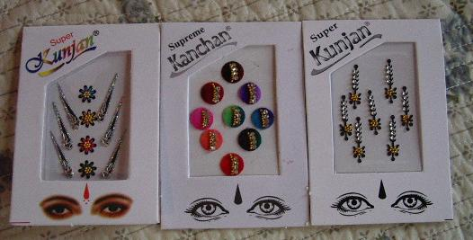
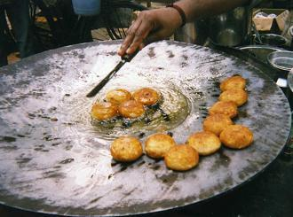
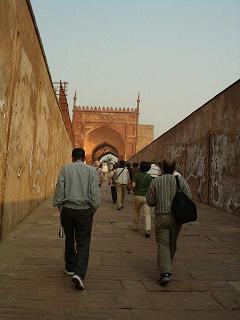
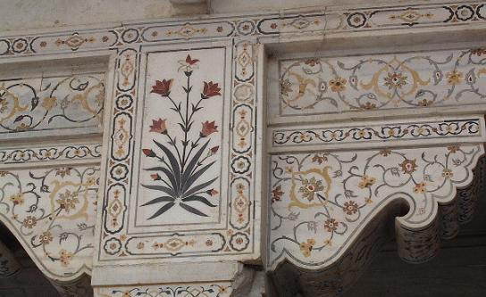
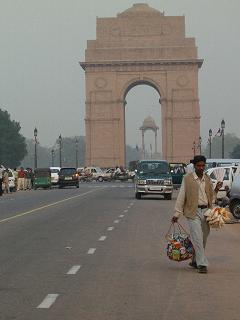
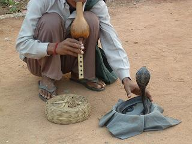

|
いよいよインド観光最終日となりました。 この日の朝食はレストランが開店する７時からで、バスの出発が７時４０分と迫っているのであわただしく一日が始まりました。 昼と夜は馬鹿の一つ覚えのようにナンを主食にしていた私も、朝だけはパンかお粥を選びます。 どう考えてみても、前日の行程にはアクシデントも予定外に時間がかかった所もないのですが、この日は昨日の予定であった【アグラ城塞】の観光が急遽組み込まれてしまったためとにかく急いで食べ、行かねばならない所に行くのも重要な日課です。   さて、どこの観光地にも売っていたのがこのお菓子で、なんという名前かはわかりませんが、ジャガイモを潰して団子にしたものを平たいお皿のようなフライパンで、炒めるというよりは揚げているようなインド風ポテトフライ。 アグラ城砦の入り口でも売っていて、とても美味しそうだったのですがあとが心配なので買えません。  高い城壁が両側に立っているちょっとした上り坂を行くと、正面に立派な門がそびえ立っていました。 アクバル帝が1565年から１０年をかけて建てた赤砂岩の城砦は、高さ２０ｍの城壁が約２．４kmにわたって築かれていますが、その昔は５㎞もあったそうです。 この城にはアクバル帝にはじまり、ジャハーンギル帝、シャー・ジャハーン帝の三代に渡って使用され、増改築が頻繁に行われたそうで、シャージャハン帝の時代にはもっとも豪華な部分が加えられたそうです。 城は赤砂岩が建築の基本になっていますが、宮殿部分は大理石で作られており、装飾には下の写真のように色の違う宝石を埋め込む細工が多用されています。 これはヤムナ川を一望できるサマン・ブルジュの外側の装飾で、白大理石づくりの床や壁に赤や青の石を埋め込んだ象嵌細工が、花や草を表していてとても美しいものです。  このサマン・ブルジュは『囚われの塔』と呼ばれ、息子のアウラングゼーブに皇帝の座を奪われたシャー・ジャハン帝が幽閉されたところです。 この部屋の奥にあるバルコニーがヤムナ川に面しており、川沿いに白いタージマハルを見ることができ、シャー・ジャハン帝は妻の墓廟を眺めながら晩年をすごし、それを見ながら息を引き取ったと伝えられています。 というわけで、タージマハルの墓室には后であるムムターズ・マハルの棺が真ん中においてあり、質素な皇帝の棺が横に添えられていたのです。 1983年に世界遺産に登録されたこの城砦は、１９世紀にイギリス軍に占領されてからは兵舎として使われ、建物の一部が壊されただけではなく、周囲の建築とは似ても似つかないバラックが建てられたのだとか… 現在では旧兵舎部分はインド軍が使用しており、８割を軍が管理しているので私たち観光客が入れるのは南側の宮殿だけです。 考古調査では、周りが濠で囲まれているため湿気による傷みが多いそうで、コケや雑草が石の間から生えて石が割れてしまう。 アグラでの最後の観光を無事終えて、最初に泊まったといいますか休憩をしたデリーに向かってまた４時間半のバス旅です。 往きに通ってきた高速道路とは違って、今度はまだ開通して間もないと思われる舗装も新しい道路を通ってバスはデリーに向かいますが、中央分離帯は高さ幅とも日本の一般道路に見られるようなもので、これから生垣の苗木や花が植えられていくらしく、所々に座り込んだおじさんが花を植えていました。 この道路でもデリーの町の手前で見かけたのですが、ビックリしたのはトラックの荷台いっぱいに高く積んである布袋のような物に入った荷物で、大きなひとつの袋に入れられたものがお相撲さんのお腹のように、ぶよーんとトラックの両端から大きくはみ出ています。 牛や馬の飼料（草）を運んでいるのだそうですが、いやぁーこれには驚きました。 ホーンを鳴らしては追い越していく車が嘘のようになくなり、どの車も快適に走っているようで、ガタゴトと揺れることのなくなった車内では私たちの上瞼と下瞼が自然に仲良くなりました。 どこかで書いているかもしれませんが、インドでの有料トイレの料金は５ルピーで、一桁のルピーなんてものは滅多に手に入らない代物であり、有料トイレに立ち寄るたびに誰か相手を探さねばなりせん。 女性の方には幸運にも５ルピーが釣銭に混ざってきてお返しすることができましたが、その後５ルピーが手に入らなかった私は、ここで彼に借金を返しておかないと借り逃げになりかねないので、その男性がバスから降りてくるのを待ち伏せし、 はぁ？ とぉーんでもない！  デリーに入ってから昼食を済ませ、やって来たのは道路にどかーん！と建っている【インド門】（写真）の近くにある【国立博物館】。 インド門はふたつあって、ムンバイにあるものはイギリスの王を迎えるために建てられたものですが、こちらは第一次世界大戦で亡くなったインド兵戦死者の慰霊碑となっています。 フランスの凱旋門を真似て建てられたようで、高さ４２mの壁面には戦死者の名前が刻まれており、門の下では完成した1921年から鎮魂の火が消えることなく燃え続けているそうです。 写真インド門の中に見えているドームは、イギリス王の勅語が刻まれた碑があったのだそうですが、現在は取り外され、マハトマ・ガンジー像を置く計画になっているとか。  インドの門が遠くに見える道路の道端で私たちの目をひきつけたのがこのヘビ使いのおじさんで、 近くにいた添乗員さんに聞くと、払った方がいいと言うので１０ルピーを財布から出すと、指を二本立ててカメラを指差し二度シャッターを切ったから２０ルピー払えと言う。 金額としては知れているのですが、トイレに入ったりホテルの枕チップとして貴重な１０ルピー紙幣を、私は二枚も払わされることになってしまいました。（＝＝； とは言え、これから訪れる国立博物館だけでインド観光も終わり、紅茶の店とハンディークラフト店を回ったらホテルへ行くだけなので、博物館や買い物をする店ではトイレ使用料は取らないでしょうから、枕チップの１０ルピーがあればそれで十分です。 この博物館で写真撮影をするには３００ルピーを払わなければならないそうで、どういうわけなのかビデオカメラの持ち込みは禁止されていました。 ということでカメラはバッグの中にしまったままですが、この博物館は1949年の創立で建物は３階建てになっていました。 １階には先史・インダス文明など考古学関係を始め、青銅器、仏教美術などの作品が展示されており、２階には海洋遺産やインドの精密画、中央アジアのアンティークなどがありました。 中庭があったのでそこに出てみようとすると、何人かのご婦人グループが添乗員さんの周りに集まって もちろん博物館での見学時間が短くなることもなく、入館前に告げられた１時間後の集合時間に全員が集まってバスに戻ると、薄汚れた服装の母親と子供らしき二人連れがバスの前で待っており、私たちの方に手を差し出しますがそれを無視してバスに乗り込み、何気なく道路の反対側の歩道に目をやると、女の子を連れた父親らしき男が次のバスへ行け！と言うように前のバスを指差しており、母子は私たちの前に止まっていたバスに行ってしまいました。 その前のバスからやってきたのが、ぐったりとして身動きひとつしないガリガリに痩せた赤ん坊を抱いた若い女性で、赤ん坊を抱いていない方の片手で食べ物を口に運ぶ仕草をして首を振り、赤ん坊を指差してはこちらに手を伸ばしてきますが、こんなぐったりした赤ん坊を使ってまで物乞いをする…ということに腹が立つやら悲しいやらで、見ていられませんでした。 紅茶の店が休みだったのか、現地ガイドハリーさんの車内販売で思っていた以上に紅茶が売れたせいか、紅茶の店に立ち寄らずに手作りの店に直行したのはいいのですが、店らしき構えは何もなく裏口のようなドアの前に何かを見張るように男の人が座っているなんとなく怪しげな店。 ドアの前でハリーさんと男の人との間に短いやり取りがあって、開かれたドアを潜ると細い地下への階段があり、その下にはうなぎの寝床のような細長い通路が伸びており、両側に置かれた棚には山と積まれた商品が並んでいました。 階段を下りた近くにはハンドメイドらしきアクセサリーや小物、衣類などが所狭しとありとあらゆるところに掛けられたり並べられたりしており、何人かの女店員にしつこく付きまとわれて奥へ行くと、そこは一転して高級そうなバッグ類が並ぶコーナーとなっていてびっくり！ コピー商品です。 何年か前に韓国でこのような店が沢山あるところに行った事がありますが、そのときの現地ガイドさんのお勧めで入った店は、コピーだということを堂々と告げながらも、モノは本物と同じ素材を使用しているとかでお値段もそれほど安くはなく、素人の私には本物だと言われてもまったく気がつかないくらいでした。 がこの店には、たまたまタイで気に入って買ってきたエイのバッグがデザイン違いで置いてあり、興味半分で手にとって中を開けてみてもどこがどう違うのかわかりませんでしたが、すかさず近寄ってきた女店員が 反対側の奥へ行ってみると、腕時計や貴金属類がガラスケースの中に並んでおり、ここには男性の店員が何人か控えているのが目に付きました。 ブランド物同様私にはまったく興味のないものながら、目の保養だけはしっかりとさせてもらい、階段を上って外に出ました。 ドアの外に立っていた見張りの人が慌てて椅子を譲ってくれ、それに座って改めて辺りを見回すと、観光バスが一台止まっていたら他の車が入ってこれないような狭い道路を隔てて、向かいに古いアパートらしきものがあり、その出入り口のあたりで私はインドに来て始めて猫を見ました。 日本猫のような虎や豹のように体の線がはっきり判るような毛の生え方ではなく、ふわふわと毛足の長い洋種の子猫のようで、出入り口からちょっと外に出てあっという間に中に入ってしまったのですが、インドにも猫は存在すると知りました。 やがて次第に外に出てくる人が増えて、店内にツアー客が誰も残っていないことを確認した添乗員さんが携帯で連絡をしたのか、バスが店の前にやってきてそれぞれに買ったビニール袋を掲げた人々が乗り込み、夕食を済ませてインド到着後に仮眠をとったホテルに入りました。 さて、ここからが格安ツアーの凄いところでありますが、２０：３０にホテルへ到着し、それぞれに荷物の整理をしながら大急ぎでシャワーを使ってベッドイン！ 真夜中のデリー市内から空港まで、もうほとんど夢の中状態で移動し、言葉少な目に挨拶をしただけのハリーさんもストン！と座席に座ったまま、到着したときにはわさわさと人がいた空港も閑散として私たちだけといった感じ。 ハリーさんはボロボロと涙を流しながら、私たちの手を一人一人握って別れを惜しみ、私たちも個人で来ていたら知り得ない現地のことをいろいろ教えていただき、またハリーさんという人を通してインドという国に触れられたことを感謝し、別れを告げました。 何年か前に中国を訪れたときに案内してくれた現地ガイドの若い男性も、別れの時には一人一人の手を固く握って別れを惜しんでくれましたが、こういうところは本当に純情なんだなぁ…と感じ、それに比べて旅に慣れきった私たちは最初から何日か後には忘れてしまう人…という頭でいるのか、その時はぐうっと熱いものがこみ上げてきてもすぐに冷めてしまうようでなんとすれっからしなことか…（＾ｍ＾； 空港で残ったお金を使い切って帰ろうと思ったのですが、時間が時間であるにもかかわらず商魂たくましくいくつも並んで開いていた小さな店をいくつか覗いてみたものの、これといって欲しいものも見つからず、使えもしないお金を持ち帰ってしまいました。 あとでなんとなくインド案内の小冊子を読んでいたら、お金の持ち出しは禁止されていると知ってドキッ！ 作成:2007-01-24  続きを読む
続きを読む
 |